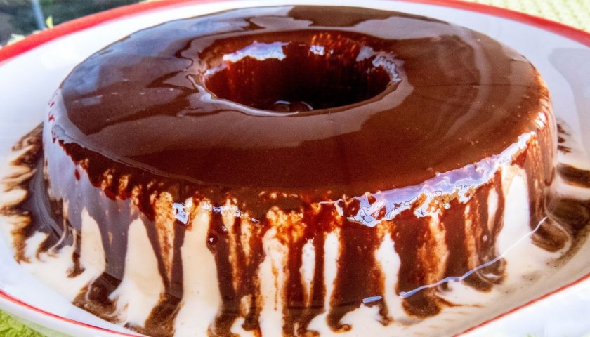

Pudim de Sorvete

Aprenda a fazer essa deliciosa e simples receita vegetariana!
Ingredientes
Calda
- 6 colher(es) de sopa de chocolate em pó
- 6 colher(es) de sopa de açúcar
- 1/2 xícara(s) de chá de água
Pudim
- 1 lata(s) de leite condensando
- 3 gemas peneiradas
- 1 xícara(s) de chá de leite
- 3 claras
- 3 colher(es) de sopa de açúcar
- 1 lata(s) de creme de leite sem soro (300g)
Preparo
Calda
- Numa panela, junte a água, o açúcar, o chocolate em pó e misture bem.
- Leve ao fogo baixo-médio e mexa até engrossar. Retire do fogo e aguarde esfriar.
- Espalhe a calda numa forma de pudim e reserve.
Pudim
- Coloque as gemas, o leite condensado e o leite no liquidificador, bata até ficar um creme homogêneo.
- Coloque o creme na panela e cozinhe até engrossar, sem parar de mexer e deixe esfriar.
- Bata as claras em neve e quando estiver endurecendo coloque o açúcar, o creme de leite mexendo delicadamente.
- Adicione o creme de gemas frio no creme das claras e misture bem. Transfira para a forma já com a calda e coloque no freezer até congelar.
Return to main page